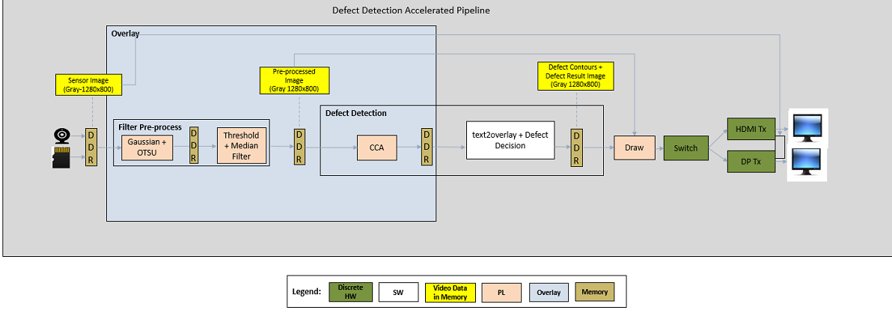
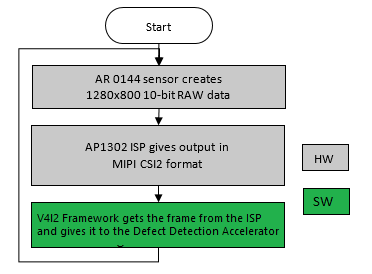
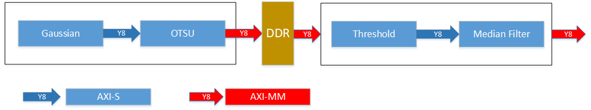
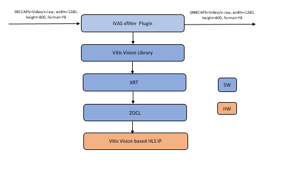
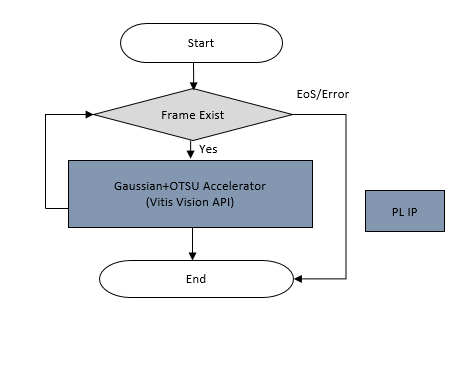
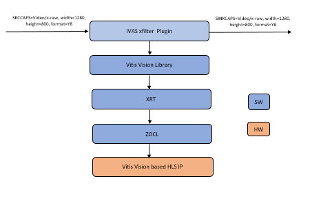
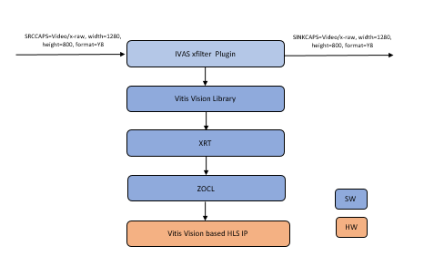
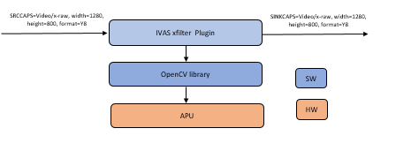

Kria™ KV260 Vision AI Starter Kit Defect Detection Tutorial |
Software Architecture of the Accelerator |
Software Architecture of the Accelerator¶
Introduction¶
This document describes the software architecture of the Defect Detection accelerator application.
Software Architecture¶
In the Defect Detection application, the Computer Vision Starter Kit can take video inputs from a live or a file source. As shown in the following figure, the video inputs will be in the Luma(Y) format, processed and displayed. Vitis overlay includes Vitis Vision libraries that process the frames and detect defects in mangoes.
In this reference design, the resolution on the input frames is 1280 x 800, and the outputs are 3x1280x800 on a 4K display.

The parts before pre-process plugin and after mixer for data source and sink respectively, use purely official GStreamer plugins, such as filesrc for file input, v4l2src for MIPI, and Kmssink for the display. Refer to the GStreamer documentation for detailed usage.
The core acceleration tasks are performed by the Pre-Process and CCA libraries, which are developed by XILINX.
The following table lists the GStreamer plugins used in the application.
| GStreamer Plugins | Definition | Note |
|---|---|---|
| v4l2src | Image capturing from the live camera source | V4l2 source |
| Kmssink | For the display | Upstream GStreamer |
| Queue | Simple data queue | Upstream GStreamer |
| Tee | 1-to-N pipe fitting | Upstream GStreamer |
| IVAS xfilter | Kernel Library: gaussian_otsu. Vitis Vision library for the Gaussian + OTSU detector. Preserves edges while smoothening and calculates the optimum threshold between foreground and background pixels. | Xilinx Opensource Plugin |
| IVAS xfilter | Kernel Library: threshold_median. Vitis Vision library to convert a grey-scale image to a binary image and filter out noise from the image. | Xilinx Opensource Plugin |
| IVAS xfilter | Kernel Library: cca_accelerator. Vitis Vision library to determine the defective pixels in the image. | Xilinx Opensource Plugin |
| IVAS xfilter | Kernel Library: text2overlay. OpenCV software library to calculate the defect density, determine the quality of the mango, and embed text as result into output images. | Xilinx Opensource Plugin |
| ____ |
The following table lists the Component types used in the application.
| Pipeline | Component | Component Type |
|---|---|---|
| Pre-Process | Gaussian + OTSU Accelerator | PL |
| Threshold + Median Filter | PL | |
| Defect Decision | CCA | PL |
| Text2Overlay + Defect Decision | SW |
v4l2src¶
Click here to view details
v4l2src is an open source plugin. The underlying GStreamer plugin uses the AR0144 sensor and the AP1302 ISP. The data flow is as follows:

In-House Plugins¶
The following are the in-house plugins:
Pre-process¶
Click here to view details
The pre-process pipeline is as follows:

The following figure depicts the Pre-Process plugin data flow.

Gaussian_OTSU Accelerator
This accelerator has two kernels - Gaussian & OTSU, stitched in streaming fashion. In general, any smoothing filter smoothens the image and will affect the edges of the image. To preserve the edges while smoothing, you can use a bilateral filter. In an analogous way as the Gaussian filter, the bilateral filter also considers the neighboring pixels with weights assigned to each of them.
These weights have two components, the first of which is the same weighing used by the Gaussian filter. The second component takes into account the difference in the intensity between the neighbouring pixels and the evaluated one.
OTSU threshold is used to automatically perform clustering-based image thresholding or the reduction of a gray-level image to a binary image. The algorithm assumes that the image contains two classes of pixels following bi-modal histogram (foreground pixels and background pixels), it then calculates the optimum threshold separating the two classes.
The following figure depicts the Gaussian + OSTSU plugin software stack.

The following figure depicts the Gaussian + OTSU plugin data flow.

Threshold_Median Accelerator
The grey-scale image should be converted to a binary image with an appropriate threshold value. The threshold function in the Vitis Vision library can perform the thresholding operation on the input image. This should yield an image that has a black background with the mango area in white.
The median blur filter acts as a non-linear digital filter that reduces noise. A filter size of N outputs the median of the NxN neighborhood pixel values, for each pixel. In this design, N is 3.
This plugin accepts the 1280x800 Y8 image as input. The plugin applies the threshold binary algorithm to convert the Y8 image to binary image by using the threshold value of the pixel. Later, it applies the Median filter to remove salt and pepper noise.
The following figure depicts the Threshold + Median plugin software stack.

The following figure depicts the Threshold + Median plugin data flow.

Threshold and Median Blur kernels are connected together using AXI Stream interface.
CCA¶
Click here to view details
The implemented Connected Component Analysis (CCA), is a custom solution to find the defective pixels in the problem object. This algorithm considers few assumptions that the background must be easily separable from the foreground object.
The custom CCA effectively analyses the components that are connected to the background pixels and removes the background from the object and defective pixels. The aim is to send the following output information from the function:
defect image: image with only defect pixels marked as ‘255’ and both object pixels and background as ‘0’
object_pixels: total non-defective pixels of the object
defect_pixels: total defective pixels
The following figure depicts the CCA plugin software stack.

The following figure depicts the CCA plugin data flow.

Defect Decision¶
Click here to view details
The output of the CCA plugin is fed into the Defect Decision block which determines the defect density and decides the quality of the mango. The block performs the following main operations:
The ratio of blemished pixels to total mango pixels is calculated to determine how much of the mango’s surface area is covered with blemishes.
Defect Decision determines whether the ratio exceeds a user-defined threshold, to decide whether the mango is defected or not.
The results will be embedded in the image and output will be fed to the next plugin for the display.
The following figure depicts the Defect Decision plugin software stack.

The following figure depicts the Defect Decision plugin data flow.

Configuration Files¶
Click here to view details
The defect-detect application uses the following configuration files.
Gaussian_OTSU Accelerator
The otsu-accelerator.json file is as follows:
{
"xclbin-location": "/lib/firmware/xilinx/kv260-defect-detect/kv260-defect-detect.xclbin",
"ivas-library-repo": "/opt/xilinx/lib",
"element-mode": "transform",
"kernels": [
{
"kernel-name": "gaussian_otsu_accel:gaussian_otsu_accel_1",
"library-name": "libivas_otsu.so",
"config": {
"debug_level" : 1
}
}
]
}
* debug_level: Enable or disable debug log for the Kernel library.
Preprocess Accelerator
The preprocess-accelerator.json file is as follows:
{
"xclbin-location": "/lib/firmware/xilinx/kv260-defect-detect/kv260-defect-detect.xclbin",
"ivas-library-repo": "/opt/xilinx/lib",
"element-mode": "transform",
"kernels": [
{
"kernel-name": "preprocess_accel:preprocess_accel_1",
"library-name": "libivas_preprocess.so",
"config": {
"debug_level" : 1,
"max_value": 255
}
}
]
}
* debug_level: Enable or disable debug log for the Kernel library.
* max_value: Maximum value to use with the THRESH_BINARY thresholding types.
For more information, see https://docs.opencv.org/master/d7/d1b/group__imgproc__misc.html#gae8a4a146d1ca78c626a53577199e9c57
CCA Accelerator
The cca-accelarator.json file is as follows:
{
"xclbin-location": "/lib/firmware/xilinx/kv260-defect-detect/kv260-defect-detect.xclbin",
"ivas-library-repo": "/opt/xilinx/lib",
"element-mode": "transform",
"kernels": [
{
"kernel-name": "cca_custom_accel:cca_custom_accel_1",
"library-name": "libivas_cca.so",
"config": {
"debug_level" : 1
}
}
]
}
* debug_level: Enable or disable debug log for the Kernel library.
Text2Overlay
The text2overlay.json file is as follows:
{
"xclbin-location": "/lib/firmware/xilinx/kv260-defect-detect/kv260-defect-detect.xclbin",
"ivas-library-repo": "/opt/xilinx/lib",
"element-mode":"inplace",
"kernels" :[
{
"library-name":"libivas_text2overlay.so",
"config": {
"debug_level" : 1,
"font_size" : 1.0,
"font" : 3,
"x_offset" : 0,
"y_offset" : 50,
"defect_threshold" : 0.16,
"is_acc_result" : 0
}
}
]
}
* debug_level: Enable or disable debug log for the Kernel library.
* font_size: User configuration to change the font size.
* font: User configuration to change the supported font type.
* x_offset: The X co-ordinate from where the text starts writing.
* y_offset: The Y co-ordinate from where the text starts writing.
* defect_threshold: The defect density threshold to calculate the defect. If the defect value is more than the threshold, it falls under defect category.
* is_acc_result: Flag to display the accumulated result. If the value is 0, then the accumulated result will not be displayed.
For more information see https://docs.opencv.org/3.4/d0/de1/group__core.html#ga0f9314ea6e35f99bb23f29567fc16e11.
Next Steps¶

License¶
Licensed under the Apache License, Version 2.0 (the “License”); you may not use this file except in compliance with the License.
You may obtain a copy of the License at http://www.apache.org/licenses/LICENSE-2.0
Unless required by applicable law or agreed to in writing, software distributed under the License is distributed on an “AS IS” BASIS, WITHOUT WARRANTIES OR CONDITIONS OF ANY KIND, either express or implied. See the License for the specific language governing permissions and limitations under the License.
Copyright© 2021 Xilinx